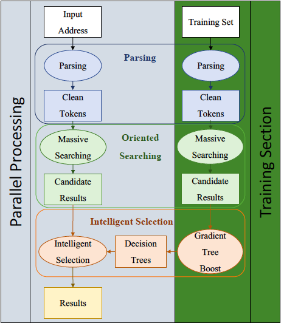

|
Xinyu Dong I am a Computer Science PhD Candidate at Stony Brook University, where I work on machine learning application in healthcare area. My advisor is Dr. Fusheng Wang, I also worked with Dr. Chao Chen and Dr. Richard N. Rosenthal. At SBU, I'm mainly focusing on building predictive models for disease risk detection and provide interpretations. Besides I also work on other projects involving geocoding and social media. And currently, I'm actively exploring meidcal LLM(Large Language Model) and spatial transcriptomics.
Email / CV / Google Scholar / LinkedIn |
{kind=link}
ResearchI'm actively searching for a job that I can apply my machine learning and data science knowledge. Most of my previous work are focused on clinical problems, but I'm open to different domains. My works are listed below, representative ones are highlighted. |
|
|
An Interactive, Interpretable Dashboard for Opioid Overdose Risk Prediction Using Machine Learning
Arjun Shrivatsa Omampuliyur Balakrishnan, Xinyu Dong, Xia Zhao, Rachel Wong, Weimin Lyu, Yinan Liu, Richard N. Rosenthal, Tengfei Ma The dashboard is built for a hybrid graph and sequential based OD prediction model we developed. To increase the interpretability and usability of the model in care delivery and population health management, we built an interpretable and interactive dashboard so that end users could visualize risk prediction and patient profiles generated by our model. We use tableau as the visualization tool to build this dashboard |
|
|
An integrated LSTM-HeteroRGNN model for interpretable opioid overdose risk prediction
Xinyu Dong,Rachel Wong, Weimin Lyu, Kayley Abell-Hart, Jianyuan Deng, Yinan Liu, Janos G Hajagos, Richard N Rosenthal, Chao Chen, Fusheng Wang Artificial Intelligence in Medicine, 2023 Combining Heterorgeneous Graphd Neural Network with LSTM models to improve the opioid overdose prediction performance. |
|
|
Enhancing Clinical Predictive Modeling through Model Complexity-Driven Class Proportion Tuning for Class Imbalanced Data: An Empirical Study on Opioid Overdose Prediction
Yinan Liu, Xinyu Dong, Weimin Lyu, Richard N Rosenthal, Rachel Wong, Tengfei Ma, Fusheng Wang Class imbalance issues are prevalent in the medical field and significantly impact the performance of clinical predictive models. Traditional techniques to address this challenge aim to rebalance class proportions. They generally assume that the rebalanced proportions are derived from the original data, without considering the intricacies of the model utilized. This study challenges the prevailing assumption and introduces a new method that ties the optimal class proportions to model complexity. This approach allows for individualized tuning of class proportions for each model. Our experiments, centered on the opioid overdose prediction problem, highlight the performance gains achieved by this approach. Furthermore, rigorous regression analysis affirms the merits of the proposed theoretical framework, demonstrating a statistically significant correlation between hyperparameters controlling model complexity and the optimal class proportions. |
|
|
A Multimodal Transformer: Fusing Clinical Notes with Structured EHR Data for Interpretable In-Hospital Mortality Prediction
Weimin Lyu, Xinyu Dong, Rachel Wong, Songzhu Zheng, Kayley Abell-Hart, Fusheng Wang, Chao Chen AMIA Symposium, 2022 We proposed a multimodal transformer to fuse time series data from clinical variables with textual information from clinical notes to boost performance of in-hospital mortality prediction. |

|
Identifying Risk of Opioid Use Disorder for Patients Taking Opioid Medications with Deep Learning
Xinyu Dong, Jianyuan Deng, Sina Rashidian, Kayley Abell-Hart, Wei Hou, Richard N Rosenthal, Mary Saltz, Joel Saltz, Fusheng Wang Journal of the American Medical Informatics Association, 2021 In this article, we propose a sequential deep learning model built on long short-term memory (LSTM) to predict Opioid Use Disorder among patients prescribed with opioid medications in their past health records. |
|
|
Predicting opioid overdose risk of patients with opioid prescriptions using electronic health records based on temporal deep learning
Xinyu Dong, Jianyuan Deng, Wei Hou, Sina Rashidian, Richard N Rosenthal, Mary Saltz, Joel H Saltz, Fusheng Wang Journal of Biomedical Informatics, 2021 In this work, we introduce a method for predicting opioid overdose risk among patients prescribed with opioids, using deep learning models trained from the patients’ EHR data. |
|
|
A large-scale observational study on the temporal trends and risk factors of opioid overdose: Real-world evidence for better opioids
Jianyuan Deng, Wei Hou, Xinyu Dong, Janos Hajagos, Mary Saltz, Joel Saltz, Fusheng Wang Drugs-real world outcomes, 2021 The primary objective of this study was to evaluate the temporal trends and risk factors of inpatient opioid overdose. Based on its patterns, the secondary objective was to examine the innate properties of opioid analgesics underlying reduced overdose effects. |
|
|
Detecting Miscoded Diabetes Diagnosis Codes in Electronic Health Records for Quality Improvement: Temporal Deep Learning Approach
Sina Rashidian, Kayley Abell-Hart, Janos Hajagos, Richard Moffitt, Veena Lingam, Victor Garcia, Chao-Wei Tsai, Fusheng Wang, Xinyu Dong, Siao Sun, Jianyuan Deng, Rajarsi Gupta, Joshua Miller, Joel Saltz, Mary Saltz JMIR Medical Informatics, 2020 Provides a scalable deep learning methodology to more accurately classify individuals with diabetes across multiple health care systems. |

|
Detection of Suicidality Among Opioid Users on Reddit: Machine Learning–Based Approach
Hannah Yao, Sina Rashidian, Xinyu Dong, Hongyi Duanmu, Richard N Rosenthal, Fusheng Wang Journal of medical internet research, 2019 This study aimed to extract posts of suicidality among opioid users on Reddit using machine learning methods. |
|
|
Machine Learning Based Opioid Overdose Prediction Using Electronic Health Records
Xinyu Dong, Sina Rashidian, Yu Wang, Janos Hajagos, Xia Zhao, Richard N Rosenthal, Jun Kong, Mary Saltz, Joel Saltz, Fusheng Wang AMIA Symposium, 2019 In this paper, we built multiple prediction models for predicting the risk of opioid poisoning in the future using patients’ history from claims data and EHR data respectively, and examined most important features for such predictions. |
|
<
|
Effective Scalable and Integrative Geocoding for Massive Address Datasets
Sina Rashidian, Xinyu Dong, Amogh Avadhani, Prachi Poddar, Fusheng Wang ACM SIGSPATIAL , 2017 project page / video / arXiv In this paper, we present EaserGeocoder, a novel open source geocoder for effectively geocoding massive address datasets. |
|
Design and code stolen from Jon Barron. |